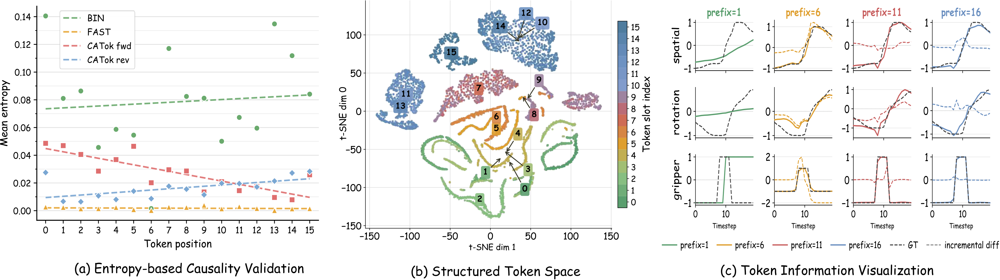

Analysis
Causal Predictive Ordering. Per-token Shannon entropy decreases monotonically in the forward token order (Figure 6a), while reversing the order flips the trend—confirming the learned ordering is directional and causal. FAST and BIN show no such structure.
Stage-wise Generative Semantics. t-SNE of VQ embeddings (Figure 6b) reveals clear slot-dependent geometry: early tokens form smooth elongated regions, late tokens form compact separated clusters. Prefix reconstructions (Figure 6c) show coherent coarse-to-fine trajectory updates, confirming each token contributes a distinct generative increment.
